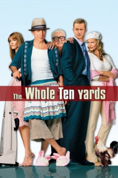

Country:United States, 98 minutes
Spoken languages:English, Hebrew, Hungarian
Genres:Comedy, Thriller, Crime
Director(s):Howard Deutch
Writer(s):George Gallo
Video Codec:Unknown
Number: 759


Certification:
Storyline:
Jimmy "The Tulip" Tudeski now spends his days compulsively cleaning his house and perfecting his culinary skills with his wife, Jill, a purported assassin who has yet to pull off a clean hit. Suddenly, an uninvited and unwelcome connection to their past unexpectedly shows up on Jimmy and Jill's doorstep; it's Oz, and he's begging them to help him rescue his wife, Cynthia.
Cast:


Medium: Original DVD,
Loaned: No
Aspect ratio: Unknown